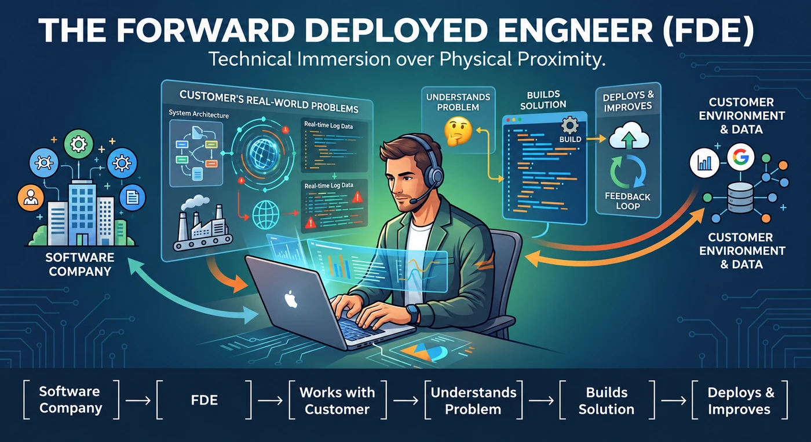
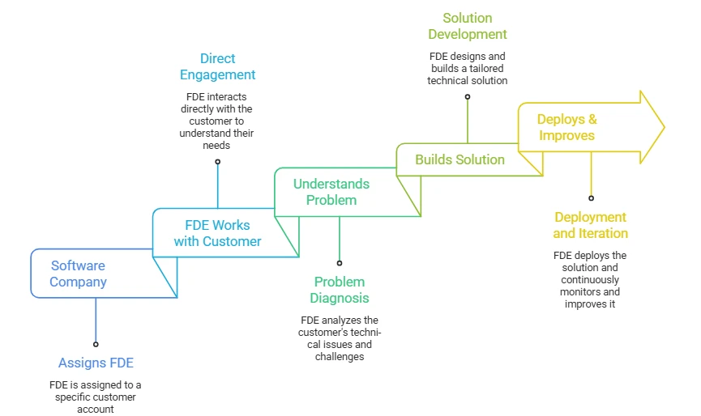
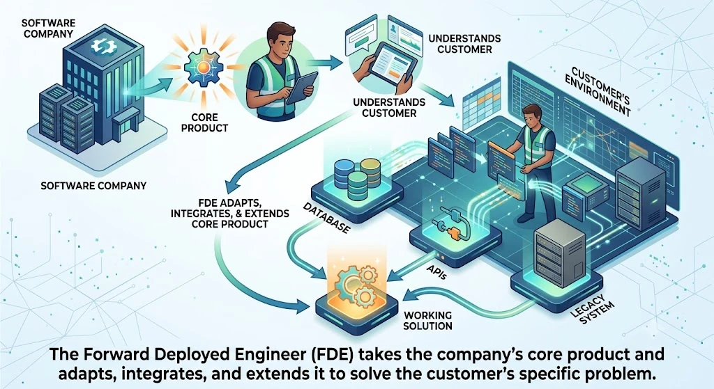
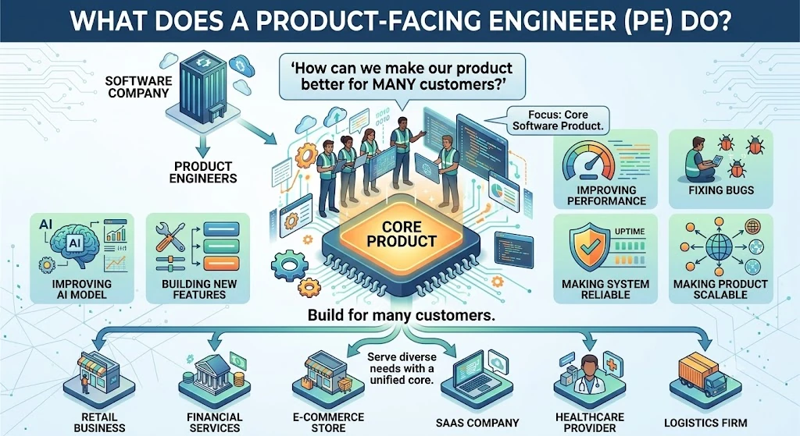
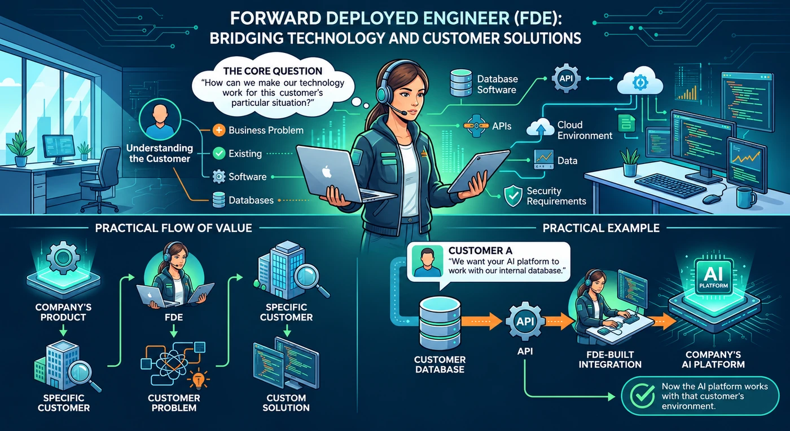
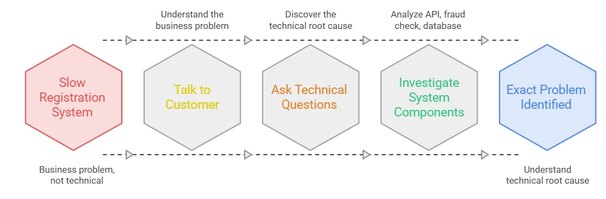
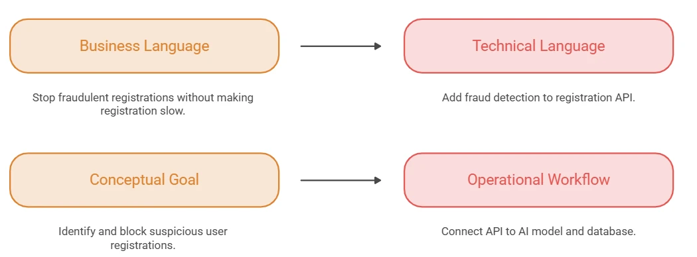
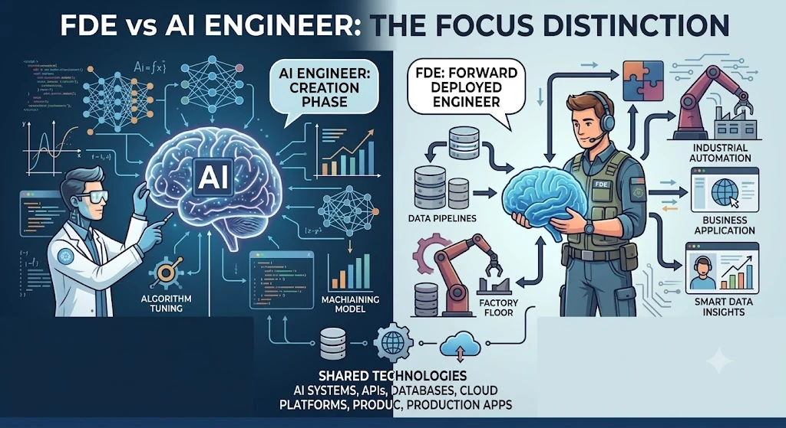
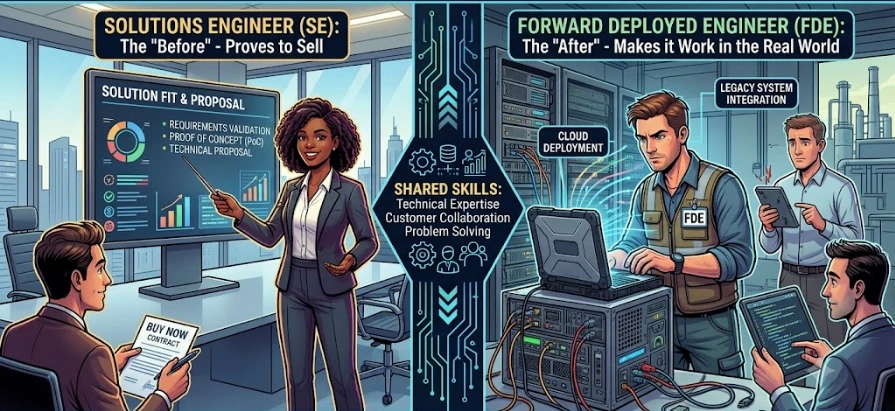
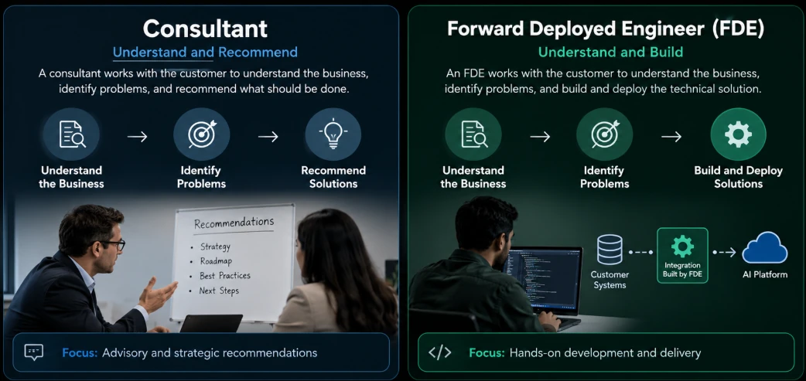

The FDE Role
What is Forward Deployed Engineering?

In technology the idea is the same:
The base
The software company’s engineering team, where the main product is built.
The front line
The place where the customer actually uses the product and runs into real problems.
A Forward Deployed Engineer (FDE) is an engineer who works close to the customer to understand their problems and build technical solutions that work in their real environment.
A simple example
A software company builds an AI platform. Its engineering team builds the main product:
But a customer has a unique problem: “We want to connect your AI platform to our existing database and use our internal data.” That needs custom coding, APIs, data integration, cloud configuration and testing. The FDE works directly with that customer:

Why does the role exist?
Imagine a large hospital wants a new AI system to manage and analyse patient data. The AI product may be powerful, but the hospital has its own:
Existing databases
Patient records already live somewhere.
Old / legacy systems
Software from years ago that still runs daily work.
Different data formats
Dates, names and codes stored in many styles.
Internal applications
Tools the staff already use every day.
Security requirements
Who may see which patient’s data.
Compliance rules
Laws about storing and sharing medical data.
Unique business processes
The hospital’s own way of getting things done.
So the hospital cannot simply install the AI product and start using it. Someone has to make the company’s technology work inside the hospital’s existing environment.
FDE exists because real customers have unique and complicated environments that the standard product alone cannot always handle. The FDE takes the company’s core product and adapts, integrates and extends it to solve the customer’s specific problem.

Product-facing vs forward deployed engineering
To understand an FDE better, compare it with a traditional product engineer. Engineers in both roles write code and solve technical problems. The difference is what problem they solve and who they work closely with.
- Product-facing engineering → builds and improves the core product.
- Customer-facing engineering (FDE) → takes that technology and makes it work for a specific customer’s problem.


Product-facing engineer
Works on the company’s core product, built for many customers. In an AI-platform company they might improve the AI model, build new features, fix bugs, improve performance, and make the system more reliable and scalable.
Main question: “How can we make our product better for many customers?”
Forward deployed engineer
Starts with one customer’s specific problem and works directly with them to understand their business problem, existing software, databases, APIs, cloud environment, data and security requirements.
Main question: “How can we make our technology work for this customer’s particular situation?”
| Product engineer | FDE |
|---|---|
| Starts with the product | Starts with the customer |
| Improves the core product | Applies the product to a customer problem |
| Thinks about many customers | Focuses first on one specific customer |
| Works mainly with internal engineering and product teams | Works closely with customers |
| Builds reusable product features | Builds integrations and customer solutions |
| Product-focused | Customer- and problem-focused |
Where the FDE sits
Put the pieces together and you get the FDE’s unique position: a bridge between the customer, the product team and the core engineering team. Problems and needs flow in from the customer; working solutions flow back out. Lessons from the field flow to the product and engineering teams; new features and fixes flow back to the FDE.
A practical walkthrough: four stages
FDE work can be understood in four major stages. We will follow one example the whole way: a customer who says “We need to stop fraudulent user registrations, but our current system is too slow.”
Stage 1 · Understanding the problem
The customer may not explain the problem technically. “Stop fraud, but keep it fast” is a business problem. The FDE’s job is to discover what is actually happening technically, so the FDE asks:
- 1How does registration work?Walk through the steps a new user goes through.
- 2Where is registration data stored?Which tables or collections hold new users.
- 3How is fraud currently detected?Rules, manual review, or nothing at all.
- 4Which API handles registration?The exact endpoint and service.
- 5Which database is being used?Its type, size and limits.
- 6Why is the current system slow?Measure before guessing. → the real cause
The FDE is moving from “Something is wrong.” to “Here is exactly what is wrong.”
Practical flow:

Stage 2 · Translating business into technology
Next, the FDE converts the business requirement into a technical solution.
Customer says
“Stop fraudulent registrations without making registration slow.”
FDE translates
“We need to add a fast fraud-detection step before saving a new user.”
Practical flow:

Stage 3 · Building and integrating
With the blueprint ready, the FDE rolls up their sleeves and writes real code. FDEs are not just advisors; they are hands-on software engineers. Depending on the need, an FDE will:
- Write APIs and backend services to handle new requests.
- Write custom scripts (often Python or JavaScript/TypeScript) to automate tasks.
- Clean and transform data so it is in the right format for the new system.
- Configure cloud infrastructure so the new code has a place to run.
- Integrate AI/ML models into the customer’s existing apps.
In the fraud example, the old system saves anyone who clicks “register” straight to the database. The FDE builds a detour: registration data must pass through the AI model before it may reach the database.
Stage 4 · Deploying and iterating
Writing the code is only half the battle. A solution is not finished until it runs in the customer’s real environment and works smoothly.
The customer starts using it, and the first version may not be perfect: “Fraud detection works, but registration has become slower.” The FDE investigates again and may optimise the system. Before and after the improvement:
The customer tests it again. This repeating process is called iteration:
Typical FDE work, day to day
Across projects, FDE work keeps returning to the same seven kinds of task. (The next note, FDE Responsibilities, walks through the full end-to-end journey in depth.)
1 · Customer communication
The FDE talks directly with the customer and keeps asking questions until the real problem is clear:
| Who | Says |
|---|---|
| Customer | “Our process is too slow.” |
| FDE | “What part is slow?” |
| Customer | “Generating the report.” |
| FDE | “Where does the report data come from?” |
| Customer | “Three different databases.” |
| FDE | “How are you combining them today?” |
2 · Technical problem solving
Once the symptom is clear, the FDE dives into the customer’s architecture to find the bottleneck.
3 · Writing code
APIs
To connect systems to each other.
Scripts
Often Python or JavaScript/Node.js, to automate manual tasks.
Data pipelines
To move information safely between systems.
Prototypes
To quickly show a customer how a solution could look.
4 · Working with customer data
Customer data is rarely clean or consistent. The same person can appear three ways:
| Name | Phone |
|---|---|
| Chandra | 9876543210 |
| CHANDRA | +91-9876543210 |
| chandra | 9876543210 |
The FDE cleans it up step by step before it is loaded anywhere:
5 · Cloud infrastructure
The FDE may also set up the infrastructure the solution needs to run, on AWS, Azure or Google Cloud depending on the customer:
6 · System integration
The FDE connects the customer’s existing technology with the company’s product. This is one of the most common types of FDE work.
7 · Training the customer’s team
Once the system works, the FDE explains it to the customer’s technical team so they can run it themselves:
- 1Explain the systemWhat each part does and how they connect.
- 2Show how to use itWalk through real tasks.
- 3Explain configurationWhich settings exist and when to change them.
- 4Show basic troubleshootingWhat to check first when something fails.
- 5Explain maintenanceWhat needs regular care.
FDE vs Software Engineer
Both are highly technical developers. Both write code, debug errors, build APIs and manage databases. The difference is not what skills they have, but where they apply them.
Software Engineer
Builds and improves the product. Works behind the scenes on the company’s core software: new features for everyone, bug fixes, performance, ensuring security to protect data, and scaling so it doesn’t crash when thousands log in at once.
“How can we build a reliable, high-quality product that works for many different users right out of the box?”
FDE
Makes the product work in a specific customer’s environment. Out in the real world, figuring out how to plug the product into a customer’s often messy setup, one client at a time.
“How do I make the company’s technology work correctly in this customer’s environment?”
For example, a customer wants the company’s AI platform to use their existing database. Their environment has an existing application, an internal API, a database and cloud infrastructure. The AI platform is separate, so the FDE connects them:
Product development vs customer-specific solutions
Software Engineer: “Let’s build a notification system that all customers can use.”
FDE: “This customer already has a notification system. How can we connect our product to it?”
Internal team collaboration vs direct customer interaction
Both roles collaborate with other engineers. The difference is the amount and type of customer interaction.
| Software Engineer works mainly with | FDE works with |
|---|---|
| Software engineers, product managers, designers, QA engineers, DevOps/platform teams | Customer developers, customer IT teams, customer data teams, business teams, plus product managers, software engineers and cloud/platform teams |
| Typical question: “How should we build and improve the product?” | Typical questions: “How does your existing system work?” “Where is your data stored?” “How does this API behave?” “What happens when this process fails?” |
Debugging in different contexts
Software Engineer gets: “Users are getting a 500 error.” They check logs, code, database queries, tests and infrastructure, and fix it for all users.
FDE gets: “It works normally, but fails when connected to our internal system.” The FDE must understand both sides.
An FDE’s integration bug may come from: customer-specific data, API differences, authentication configuration, network restrictions, data formats, cloud configuration, or existing legacy systems.
System integration
A Software Engineer might build the company’s API (Frontend → Company API → Company database). The FDE then connects that API to the customer’s world:
How they work together
FDEs and Software Engineers rely on each other. Their workflow is a continuous feedback loop:
- 1FDE → SWE (feedback)The FDE notices every customer struggles to format their data: “I am writing the same data-cleaning script for every client. This is a universal problem.”
- 2SWE → FDE (product update)The Software Engineer builds an automated data-cleaning feature into the core product.
- 3The resultThe FDE no longer writes that script by hand, the next deployment is faster, and the product is more valuable for everyone.
FDE vs AI Engineer
Both can work with AI systems, APIs, databases, cloud platforms and production applications. The main difference is their focus.

What does an AI Engineer do?
An AI Engineer builds AI systems and integrates them into software applications. Their work can include:
Models & LLMs
Working with AI/ML models and LLMs, choosing and evaluating models.
Data & RAG
Preparing data for AI systems and building RAG (retrieval) systems.
Pipelines & APIs
Designing AI pipelines and building APIs around models.
Run it
Deploying AI systems, evaluating and monitoring them in production.
Main question: “How can we build an AI system that works reliably in a production application?” For a company chatbot, they might design:
They work on the AI pipeline, prompts, retrieval, model selection, evaluation and architecture. The focus is building the AI capability.
What does an FDE do with AI?
A company already has an AI platform. A customer says: “We want to use your AI to search our internal company documents.” The FDE needs to understand where the documents are stored, what format they use, how the customer accesses them, what database they have, what security rules apply, how users will reach the AI, and where it should be deployed. Then the FDE builds the integration:
Building the model vs applying the model
The easiest way to separate them: look at how each treats the AI model. One builds it, the other applies it.
AI Engineer cares about
Performance: is inference fast enough?
Accuracy: is the training or fine-tuning working?
Architecture: are we using the right ML frameworks?
FDE cares about
Connection: how do I pass the customer’s data into this model securely?
Compatibility: does the model’s output match what the customer’s application expects?
Example: AI fraud detection
- The AI Engineer’s job: train a model on millions of rows of historical data to recognise what a fake user looks like. Their job finishes when the model is wrapped in an API, ready to accept requests.
- The FDE’s job: a client says “We want this fraud detection on our website.” The FDE does not train a new model. They write backend code (for example, Node.js middleware) that takes the user’s input from the registration form, sends it to the AI Engineer’s API for a quick check, then either blocks the user or saves them to the database.
FDE vs Applied AI Engineer
These two can look very similar. Both may work with AI models, APIs, data, RAG, AI agents, the cloud, backend systems and integrations. The difference is their primary focus.
![Infographic: Applied AI Engineer vs FDE, shared tech, distinct focus. Shared: AI models, APIs, data, RAG, AI agents, cloud, backend systems, integrations. Applied AI Engineer builds the AI-powered application: smart, accurate, functional; create core functionality; develop agents and RAG; build scalable applications. FDE forces AI to work in messy, real-world environments with old systems, dirty data and custom deployment: deploy into customer context, solve specific problems, navigate messy legacy environments, adapt data and integrations.](img/09.webp)
Applied AI Engineer · the app builder
Starting point: “We have a real-world problem. How can we build an AI solution to solve it?”
Does: tests different models (“Does Model A or Model B answer more accurately?”), builds the core RAG pipeline (chunking documents, creating embeddings, setting up vector databases), designs prompts and AI agents.
Finish line: a working AI application that gives accurate answers in a controlled environment.
FDE · the deployer
Starting point: a customer’s problem, e.g. “We want an AI assistant, but our documents are stored in our internal system.”
Does: investigates the customer environment (internal documents → internal database → internal API → company application), then connects it to the AI platform.
Finish line: the AI application working inside the customer’s messy, real-world environment.
The Applied AI Engineer makes the AI smart; the FDE makes the smart AI work for one particular customer.
FDE vs Solutions Engineer
A Solutions Engineer (SE) and an FDE both work closely with customers and need strong technical knowledge. The biggest difference is when and why they work with the customer.

Solutions Engineer · the “before”
Proves the product can work, so the customer decides to buy it.
FDE · the “after”
Does the hands-on engineering to make it actually work in the customer’s real environment.
What a Solutions Engineer does
The SE is the technical face of the sales team. When a customer is thinking about buying, they have many technical questions; the SE answers them.
Technical discovery
Interviews the customer to learn their environment: “What database are you using? Do you have an API? Where is your application hosted? How do users log in? What security restrictions do you have?”
Product demos
Shows how the product looks and solves the problem, often with a realistic example based on the customer’s use case.
Proof of Concept
Builds a tiny, simplified prototype on a small sample of the customer’s data to prove “Yes, our AI can read your documents.”
Example: a potential customer says “We want AI to search our internal documents.” The SE asks:
- 1What type of documents do you have?
- 2Where are they stored?
- 3How many documents?
- 4Who needs access?
- 5What kind of questions should users ask?
- 6What security requirements do you have?
Discovery combines two things into a possible solution: customer requirements + customer environment → possible solution. Then the SE demonstrates it:
The message is: “Here is how our product can solve your problem.”
Pre-sales
Pre-sales means everything that happens before the customer buys. The SE supplies the technical knowledge along the way:
During this, the SE may explain how the product works, how it integrates with existing systems, which APIs are available, what architecture could be used, what security capabilities exist, and what implementation might look like.
The Proof of Concept (PoC)
A Proof of Concept is a small implementation that shows a technical approach can work. Suppose the customer asks: “Our company uses a very old, custom-built database. Can your modern AI platform connect to it and read it?” The SE does not build a perfect system for all 10 million files; that would take months. Instead they build a quick, temporary bridge:
- 1Take a tiny sampleJust 10 files from the old database.
- 2Write a quick connectionLink those 10 files to the AI platform.
- 3Ask the AI a questionGet a sample answer. → “Yes, this will work.”
A PoC is a rough draft, not the finished product. Its only job is to answer one question with confidence.
Where the FDE comes in
Once the customer says “Okay, we want this for our entire organisation,” the work changes, and the FDE turns the demo into a real production solution:
What the SE demonstrated
What the FDE builds
The FDE deals with the messy details of making it work in the real environment, through implementation, integration, deployment, testing, production and iteration.
Architecture guidance vs hands-on engineering
| Solutions Engineer | FDE |
|---|---|
| Designs or recommends an architecture: Customer application → API → AI platform → Database | Builds and deploys it: Customer application → Customer API → FDE integration service → AI platform → Database |
| “This architecture should let your application talk to our platform.” | “Let’s build and deploy it.” |
| Helps the customer decide and understand | Helps the customer implement and operate |
FDE vs Consultant
Both work with customers, understand the business, identify problems and suggest solutions. The difference is what they do after understanding the problem.

Consultant · the advisor
Studies business processes, current systems, costs, performance, organisational problems, requirements and risks. Delivers recommendations, strategy, roadmaps, process improvements and plans.
“What is the best advice I can give this customer so they can fix their problem?”
FDE · the builder
Figures out the problem and then actually builds it: designs the solution, writes the code, connects the systems and puts it live.
Example: a hospital says “Our patient-data process is slow and inefficient.” The consultant studies the current process, understands the problems, analyses data, identifies gaps, recommends improvements and writes an implementation roadmap, e.g. “Automate data collection and introduce an AI-based document-processing system.”
Technical implementation vs advisory work
A consultant may recommend: “Move this application to the cloud.” The FDE takes that requirement and actually does it:
FDE vs Implementation Engineer
Both work directly with customers to get a company’s software working in their environment. The difference:
![Side by side. Implementation Engineer, the configurator: product setup checklist (configure settings, set up users, enable features, connect integrations, go live) using existing features; goal: get the existing product up and running for the customer. FDE, the custom builder: customer systems to a custom integration built by the FDE to the product platform; builds custom integrations, solves complex unique problems, extends beyond standard product capabilities, works closely with customer engineering teams; goal: build and deploy a solution that works in the customer's real environment.](img/12.webp)
Implementation Engineer · the configurator
Sets up the existing product using the features, tools and configuration options it already has.
“How do we implement our existing product correctly for this customer?”
FDE · the custom builder
Steps in when the customer’s problem cannot be fully solved with standard product capabilities and needs additional engineering.
Imagine a SaaS product that already has login, a dashboard, reports, user management, an API and notifications. After a customer buys it, the Implementation Engineer helps them create users, configure settings, connect existing systems, set up APIs and integrations, import data, configure workflows, deploy, test, and train the customer.
Example: a customer buys a new CRM (Customer Relationship Management) platform but still has its data in an old CRM:
Configuration vs custom engineering
Requirement: “Managers must approve new customer records.”
Implementation Engineer: the product already has an approval workflow, so configure it.
FDE: the customer’s approval system is completely different from anything the product supports, so build a bridge.
Implementation Engineer → configure what already exists. FDE → build what is needed when existing capabilities are not enough.
All seven roles at a glance
Here is everything from this note in one place. Keep it handy: these titles come up constantly in job posts and interviews.
| Role | Starts from | Main question | Main output | When |
|---|---|---|---|---|
| Software Engineer | The product | How do we make the product better for many users? | Reusable product features and fixes | All the time, internally |
| AI Engineer | The AI capability | How do we build an AI system that works reliably? | Models, AI pipelines, AI APIs | Product build phase |
| Applied AI Engineer | A real-world problem | How do we build an AI app that solves it? | A working AI app in a controlled environment | Product / solution build |
| Solutions Engineer | A prospective buyer | Can our product solve their problem? | Discovery, demos, PoCs | Before the sale |
| Consultant | A business problem | What is the best advice for this customer? | Recommendations, roadmaps, plans | Planning stage |
| Implementation Engineer | A purchased product | How do we set up our product correctly for them? | A configured, working product | After the sale |
| FDE | One customer’s real problem | How do we make our technology work in this customer’s environment? | Custom integrations and production solutions | After the sale, end to end |
SWE
Builds the product.
AI / Applied AI
Builds the AI brain or AI app.
Solutions Eng.
“Here is how we can solve it.”
Consultant
“Here is what you should do.”
Implementation
“Let’s configure what exists.”
FDE
“Let’s build it, deploy it and make it work here.”
Key terms
- Forward Deployed Engineer (FDE)
- An engineer who works close to the customer to understand their problems and build technical solutions that work in the customer’s real environment.
- Forward deployed
- Borrowed from the military: placed near the “front line”. In tech it means closely connected to the customer’s real problems, not necessarily sitting in their office.
- Product-facing engineer
- An engineer who builds and improves the company’s core product so it works for many customers.
- System integration
- Connecting a customer’s existing applications, APIs and data with a company’s product so they exchange data correctly. One of the most common kinds of FDE work.
- Iteration
- The repeating cycle of build, deploy, get feedback and improve, used until a solution truly works for the customer.
- Solutions Engineer (SE)
- A technical pre-sales role that runs discovery, demos and proofs of concept to show a prospective customer that the product can solve their problem.
- Pre-sales
- All activities that happen before a customer buys a product, such as discovery, demos, PoCs and evaluation.
- Proof of Concept (PoC)
- A small, quick implementation on sample data that shows a technical approach can work. It is a rough draft, not the final product.
- Implementation Engineer
- A role that sets up, configures and connects an existing product for a customer using the features and options the product already has.
- Applied AI Engineer
- An engineer who builds AI-powered applications (testing models, building RAG pipelines, designing prompts and agents) that work accurately in a controlled environment.
- Consultant
- An advisor who studies a customer’s problem and delivers recommendations, strategy and implementation plans, but usually does not build the solution.
- Glue code
- Code an FDE writes to connect existing pieces, such as passing customer data into an AI model’s API and returning its result to the customer’s application.
Self-check
Pick an answer. You’ll see right away whether it’s correct and why.
What does “forward deployed” mean for an engineer?
- They must work from the customer’s office every day
- They work only on the company’s newest product
- They work closely with the customer’s real-world technical problems
- They travel to sell the product
It is about closeness to the customer’s problems, not physical location.
Why can’t the hospital in the example just install the AI product and start using it?
- It has its own databases, legacy systems, data formats, security and compliance rules
- The AI product is not powerful enough
- Hospitals are not allowed to use AI
- The product has no API
The product is fine; the customer’s unique environment is what needs engineering work.
A customer says “Stop fraudulent sign-ups, but keep registration fast.” Which is the best FDE translation?
- “Buy a bigger server.”
- “Retrain the AI model from scratch.”
- “Ask users to verify by post.”
- “Add a fast fraud-detection step before saving a new user.”
Stage 2 turns the business request into a concrete technical change that meets both needs.
An app works normally but fails only when connected to the customer’s internal system. Who is best placed to debug it, and why?
- A Software Engineer, because the product must be broken
- An FDE, because they understand both sides of the integration
- A Consultant, because they write the roadmap
- A Solutions Engineer, because they ran the demo
Integration bugs often come from customer-specific data, auth, network or formats, which the FDE knows.
Which statement best separates an AI Engineer from an FDE?
- Only the FDE writes code
- Only the AI Engineer talks to customers
- The AI Engineer builds the model; the FDE applies an existing model to a customer’s environment
- They are the same job
Development loop vs integration loop: one builds the brain, the other gives it a job.
Before the sale, a technical person runs discovery, demos the product and builds a PoC on 10 sample files. What is their role?
- Solutions Engineer
- FDE
- Implementation Engineer
- Product engineer
Pre-sales discovery, demos and PoCs are the Solutions Engineer’s core work.
The product already has an approval workflow and the customer only needs rules set up. Who handles it?
- An FDE, by building a new service
- A Consultant, by writing a roadmap
- An AI Engineer, by training a model
- An Implementation Engineer, by configuring the existing feature
Configure what already exists; the FDE steps in only when existing capabilities are not enough.
An FDE writes the same data-cleaning script for every client. What should happen next?
- Keep writing it; that is the job
- Tell the software engineers, so it can become a core product feature
- Ask the consultant to recommend a new roadmap
- Stop cleaning data
Field feedback to the product team turns repeated custom work into a reusable feature.
All of it, in one sentence
A Forward Deployed Engineer takes a company’s technology to the front line and does the hands-on engineering to make it work in one customer’s real environment, while others build the product (SWE, AI engineers), sell it (Solutions Engineers), advise (Consultants) or configure it (Implementation Engineers).
— Vishwa Mohan